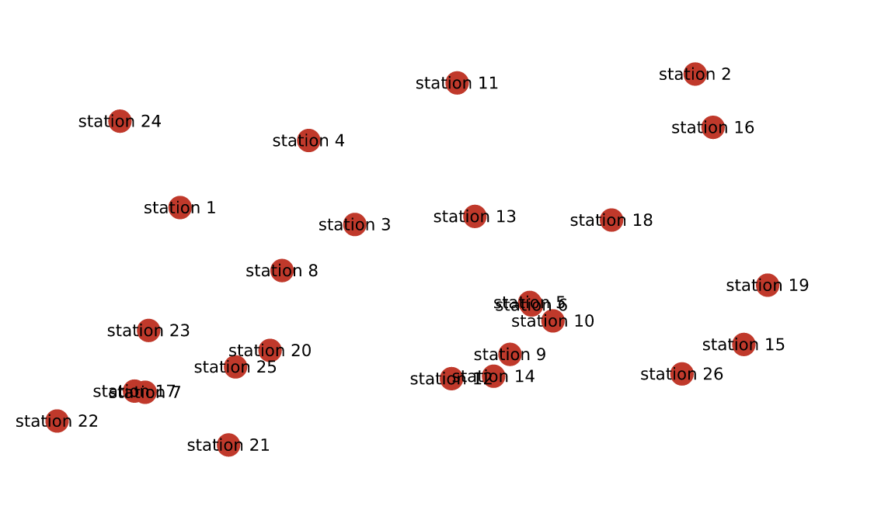
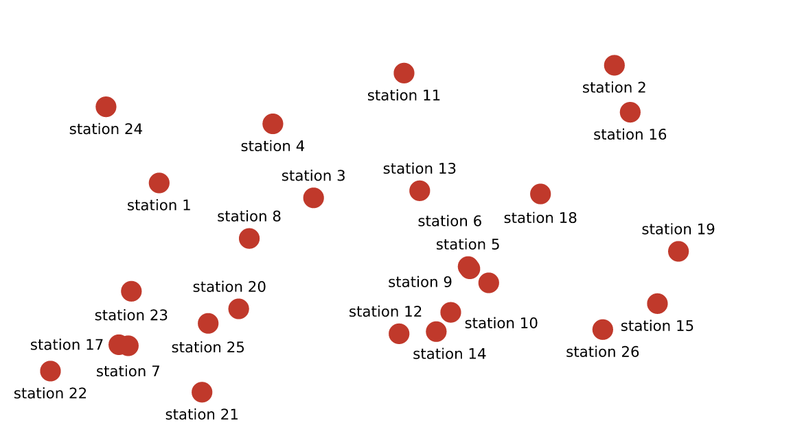
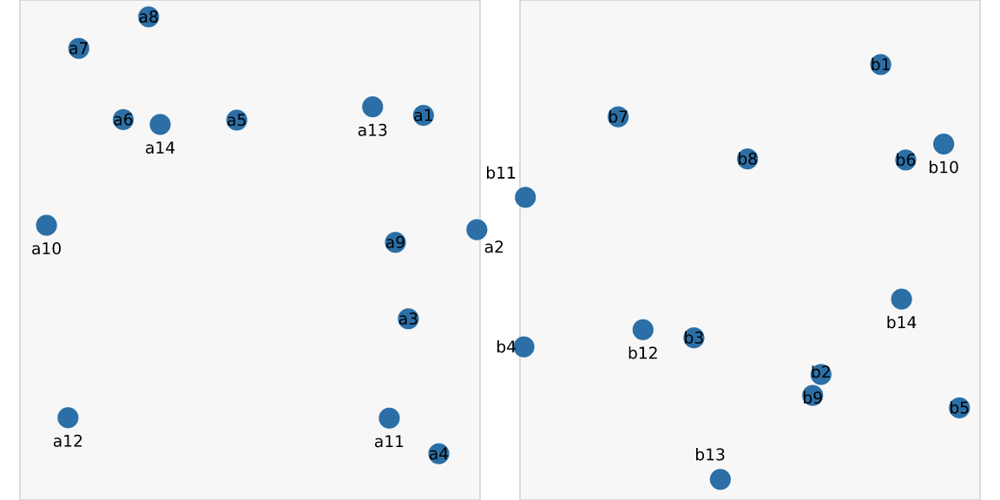
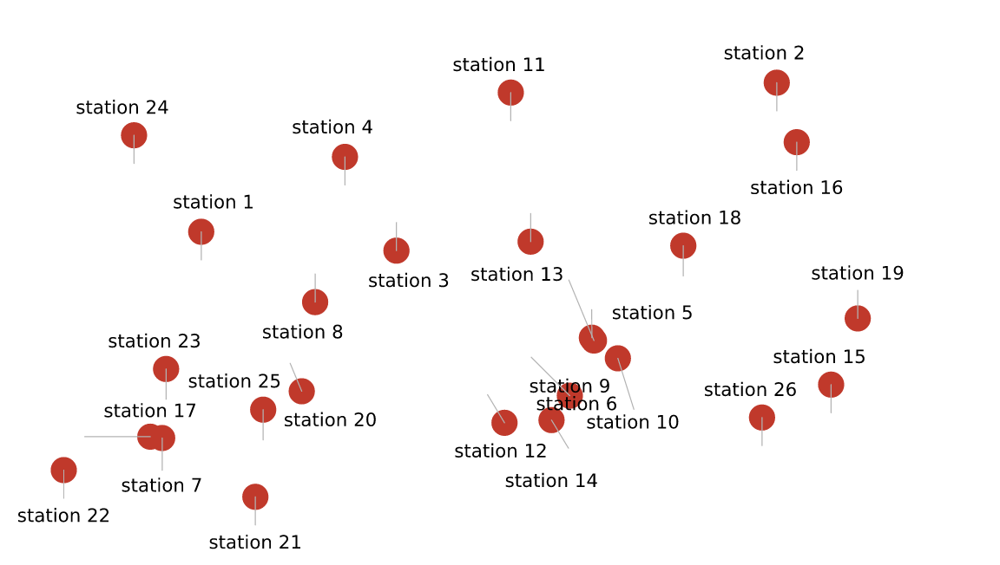
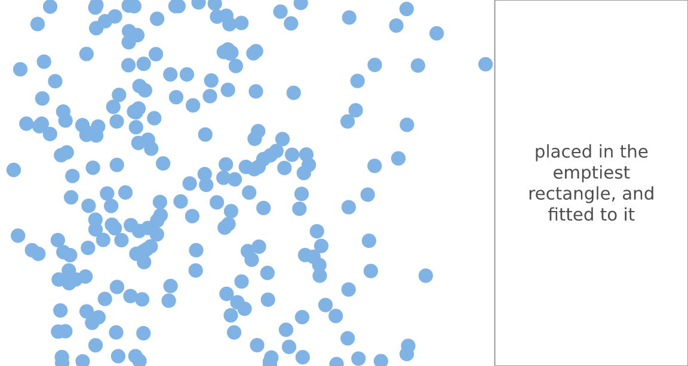
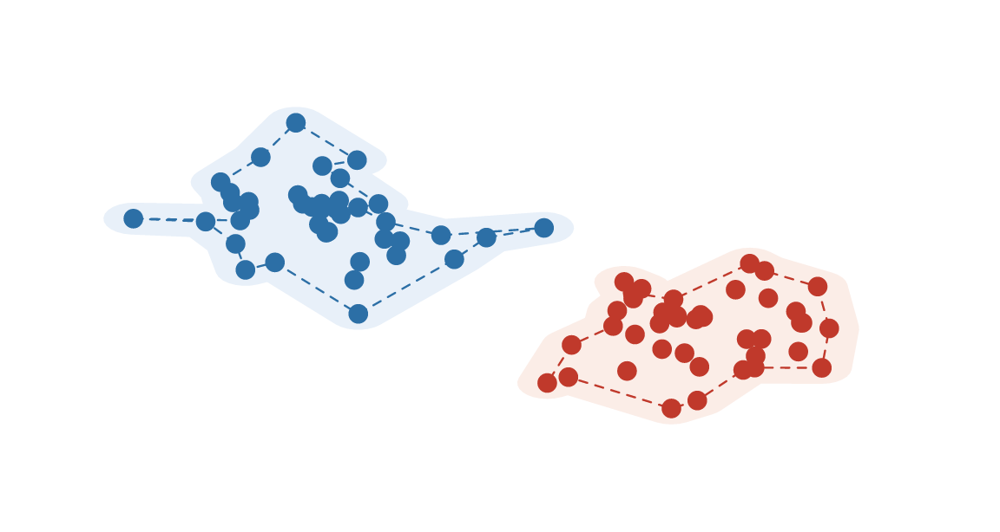
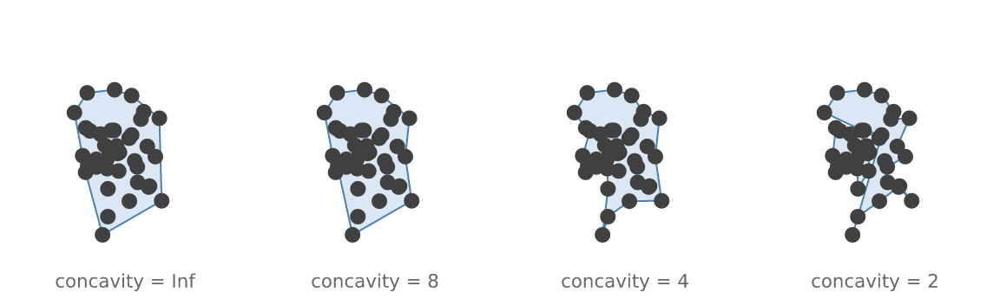

Placement: repelling labels, finding room, outlining groups
Source:vignettes/placement.Rmd
placement.RmdOverlapping labels are the most common defect in a data graphic, and the hardest to fix from above the engine — because fixing them needs to know where everything ended up, which is information that normally only exists after drawing.
vellum resolves layout before it draws, so it knows. This article covers the three things that follow from that: moving labels apart, finding somewhere to put one thing, and outlining a group.
Repelling labels
n <- 26
x <- runif(n) * 0.9 + 0.05
y <- runif(n) * 0.85 + 0.08
scatter <- function() {
vl_scene(6, 3.4, dpi = 96, bg = "white") |>
draw(points_grob(x, y, size = vl_unit(2, "mm"),
gp = vl_gpar(fill = "#C0392B", col = NA), name = "pts")) |>
draw(text_grob(paste0("station ", seq_len(n)), x = x, y = y,
gp = vl_gpar(fontsize = 8), name = "lab"))
}
display(scatter())

Every label is legible, none has left its point, and nothing was dropped.
It does not care what coordinate system you used
This is the part worth understanding, because it is what makes the feature different from doing the same thing a layer up.
The solve happens in device pixels, over boxes that
have already resolved. The answer is then applied as an absolute
millimetre offset on top of each label’s existing coordinate —
vellum’s compound native + mm unit. So the label keeps its
data anchor and moves by exactly the distance the solver asked for,
whatever produced that anchor.
A label in native units inside a panel with a scale of
0..100 on one axis and 0..0.01 on the other
moves by the same mechanism as one in npc on the page.
Panels are not solved one at a time; they are all just boxes.
two <- vl_scene(6, 3, dpi = 96, bg = "white")
for (i in 1:2) {
px <- runif(14) * 100
py <- runif(14) * 0.01
two <- two |>
push(vl_viewport(name = paste0("p", i), x = c(0.25, 0.75)[i], width = 0.46,
xscale = c(0, 100), yscale = c(0, 0.01))) |>
draw(rect_grob(gp = vl_gpar(fill = "grey97", col = "grey85"))) |>
draw(points_grob(vl_unit(px, "native"), vl_unit(py, "native"),
size = vl_unit(1.6, "mm"),
gp = vl_gpar(fill = "#2C6FA6", col = NA))) |>
draw(text_grob(paste0(c("a", "b")[i], seq_len(14)),
x = vl_unit(px, "native"), y = vl_unit(py, "native"),
gp = vl_gpar(fontsize = 7), name = paste0("lab", i))) |>
pop()
}
display(vl_repel(two, padding = 0.5))
The solve on its own
vl_repel() is vl_place() plus applying the
answer. vl_place() hands you the answer instead:
sol <- vl_place(scatter(), padding = 0.6)
head(sol[, c("name", "index", "dx", "dy", "resolved")])
#> name index dx dy resolved
#> 1 lab 1 0.00000000 -4.295429 TRUE
#> 2 lab 2 0.00000000 -4.295429 TRUE
#> 3 lab 3 0.00000000 4.295429 TRUE
#> 4 lab 4 0.00000000 -4.295429 TRUE
#> 5 lab 5 -0.02685361 4.295429 TRUE
#> 6 lab 6 -3.82683432 9.238795 TRUEdx/dy are millimetres, and
resolved says whether that label ended up clear of
everything.
Two reasons to want this rather than the finished scene. The first is leader lines — the shift is a plain offset, so drawing one is arithmetic:
moved <- which(abs(sol$dx) + abs(sol$dy) > 1)
# Place the labels FIRST, then draw the leaders onto the result.
placed <- vl_repel(scatter(), padding = 0.6)
display(
placed |>
draw(segments_grob(
x0 = vl_unit(x[moved], "npc"), y0 = vl_unit(y[moved], "npc"),
x1 = vl_unit(x[moved], "npc") + vl_unit(sol$dx[moved], "mm"),
y1 = vl_unit(y[moved], "npc") + vl_unit(sol$dy[moved], "mm"),
gp = vl_gpar(col = "grey70", lwd = 0.6)
))
)
The order matters, and getting it wrong is
instructive. Drawing the leaders before repelling puts
them in the scene that the solver then looks at — and a solver avoids
whatever is in the scene. Worse, each leader lies exactly along the path
its label wanted to take, and vl_place() works on bounding
boxes, so a diagonal segment blocks the whole rectangle spanning it. The
labels get pushed back the way they came: measured on this figure, the
median leader ended up 146° from the label’s actual
displacement, with half of them pointing essentially backwards.
Placing first and annotating afterwards avoids the whole problem,
because vl_repel() and the sol above are the
same solve — so the leaders land exactly on the labels. The general
rule: anything you add to a scene becomes an obstacle to a later
solve.
The second is that resolved = FALSE is a decision point.
On a genuinely crowded page some labels cannot be placed, and the useful
responses — drop this one, abbreviate it, shrink the font, show it on
hover — all depend on knowing what the labels mean. vellum
reports the failure and stops there rather than guessing; that call
belongs to the layer above.
How it works, and where it gives up
Relaxation, then repair. Overlaps push labels apart along the axis of least separation; labels that are clear are eased back toward their anchor. That alone is a local method, and local methods get stuck — a label slides out of the collision it is in and never considers that the far side of its anchor was free the whole time. So a second pass takes every label still colliding and tries candidate positions on a ring around its anchor, nearest first, taking the first that is clear. On a crowded scatter that pass is the difference between most overlaps remaining and almost none.
max_shift bounds how far a label may travel (10 mm by
default), so labels stay near what they label rather than solving the
puzzle by scattering.
Where is there room?
The other placement question. Not “how do I move these apart” but “where can this one thing go” — which is what automatic legend and annotation placement needs.
cloud <- vl_scene(5, 3.2, dpi = 96, bg = "white") |>
draw(points_grob(rbeta(220, 2, 5), runif(220), size = vl_unit(1.6, "mm"),
gp = vl_gpar(fill = "#7FB2E5", col = NA)))
gap <- vl_empty_region(cloud, grid = 260)
round(gap, 3)
#> x0 y0 x1 y1
#> 0.719 0.000 1.000 1.000That composes neatly with width-constrained text
(vignette("typography")): the region also comes back in
millimetres, which is exactly the absolute measure
text_grob(width=) wants — so an annotation can be fitted to
the gap that was just found, rather than to a width guessed in
advance.
mm <- vl_empty_region(cloud, grid = 260, unit = "mm")
display(
cloud |>
draw(rect_grob(x = mean(gap[c("x0", "x1")]), y = mean(gap[c("y0", "y1")]),
width = gap[["x1"]] - gap[["x0"]],
height = gap[["y1"]] - gap[["y0"]],
gp = vl_gpar(fill = "#FFFFFFCC", col = "grey60"))) |>
draw(text_grob("placed in the emptiest rectangle, and fitted to it",
x = mean(gap[c("x0", "x1")]), y = mean(gap[c("y0", "y1")]),
align = "centre", fit = TRUE,
width = vl_unit(mm[["x1"]] - mm[["x0"]] - 4, "mm"),
height = vl_unit(mm[["y1"]] - mm[["y0"]] - 4, "mm"),
gp = vl_gpar(fontsize = 11, col = "grey30")))
)
Occupancy is rasterised onto a grid, so the answer is exact on
that grid. That is a deliberate approximation — the exact maximal
empty rectangle over n boxes is superquadratic, and nothing is placed to
sub-pixel tolerance. Boxes round outward, so the result is conservative:
it will never claim space that is in fact occupied. Raise
grid to trade time for precision.
Outlining a group
vl_hull() and vl_buffer() are here rather
than with the other geometry because exclusion zones are what label
placement wants them for.
grp <- data.frame(
x = c(rnorm(40, 0.32, 0.07), rnorm(40, 0.7, 0.06)),
y = c(rnorm(40, 0.6, 0.09), rnorm(40, 0.38, 0.07)),
g = rep(1:2, each = 40)
)
s <- vl_scene(5, 3.2, dpi = 96, bg = "white")
for (g in 1:2) {
p <- grp[grp$g == g, ]
h <- vl_hull(p$x, p$y, concavity = 4)
b <- vl_buffer(h$x, h$y, 0.03)
s <- s |>
draw(polygon_grob(b$x, b$y,
gp = vl_gpar(fill = c("#E8F0F9", "#FBEDE7")[g], col = NA))) |>
draw(polygon_grob(h$x, h$y,
gp = vl_gpar(fill = NA, col = c("#2C6FA6", "#C0392B")[g],
lwd = 1.2, lty = "dashed"))) |>
draw(points_grob(p$x, p$y, size = vl_unit(1.5, "mm"),
gp = vl_gpar(fill = c("#2C6FA6", "#C0392B")[g], col = NA)))
}
display(s)
concavity runs the opposite way to what the name
suggests: larger is more convex. Inf (the
default) is exactly the convex hull, 8 follows the points
loosely, 4 is a good tight outline, and below about
3 the boundary starts threading between interior points and
crossing itself.
p <- data.frame(x = rnorm(40, 0.5, 0.1), y = rnorm(40, 0.5, 0.12))
row <- vl_scene(6, 1.8, dpi = 96, bg = "white")
for (i in seq_along(cs <- c(Inf, 8, 4, 2))) {
h <- vl_hull(p$x, p$y, concavity = cs[i])
row <- row |>
push(vl_viewport(x = (i - 0.5) / 4, width = 0.25)) |>
draw(polygon_grob(h$x, h$y, gp = vl_gpar(fill = "#DCE7F5", col = "steelblue"))) |>
draw(points_grob(p$x, p$y, size = vl_unit(1.2, "mm"),
gp = vl_gpar(fill = "grey25", col = NA))) |>
draw(text_grob(paste0("concavity = ", cs[i]), y = 0.06,
gp = vl_gpar(fontsize = 8, col = "grey40"))) |>
pop()
}
display(row)
Self-intersection at low concavity is inherent to the
method, not a defect: a boundary that threads between interior points
has to cross itself eventually. The same is true of buffering a concave
ring — repairing either is a boolean union, which vellum does not have
yet.
Where to go next
-
vignette("typography"): the width-constrained text this pairs with. -
vignette("inspecting-scenes"):vl_lint(), which reports overlap and legibility problems rather than fixing them. -
vignette("retained-mode"):edit_node(), the mechanismvl_repel()uses to return a modified scene.